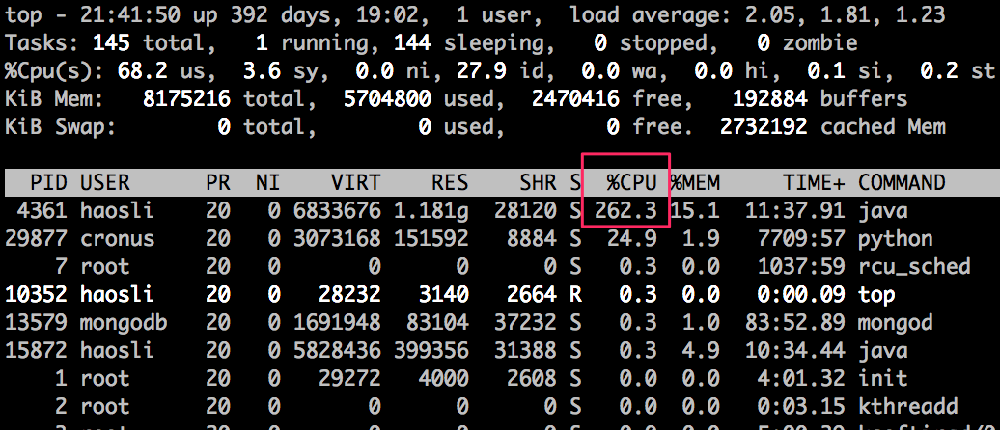
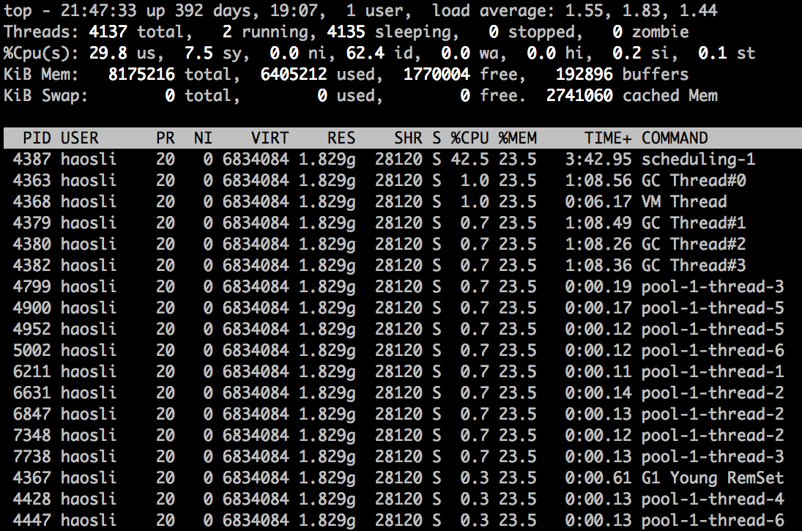
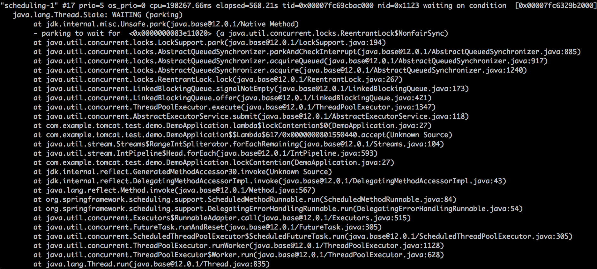
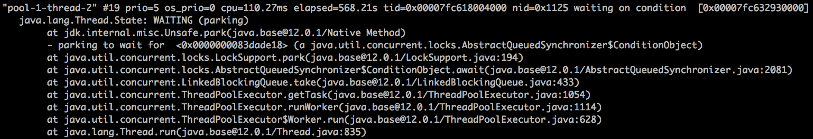
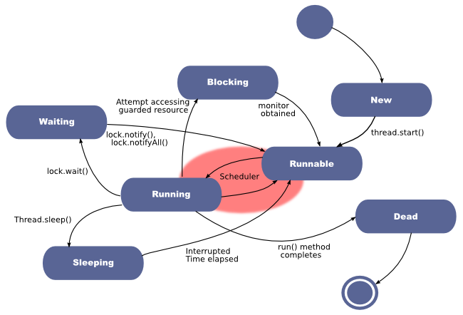
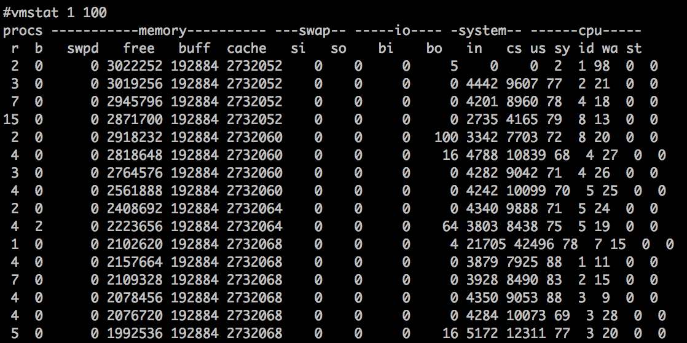
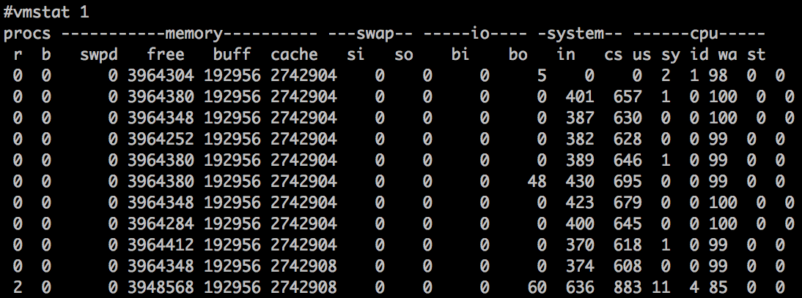

- 00 开篇词 Java程序员如何快速成长？.md.html
- 01 Web容器学习路径.md.html
- 02 HTTP协议必知必会.md.html
- 03 你应该知道的Servlet规范和Servlet容器.md.html
- 04 实战：纯手工打造和运行一个Servlet.md.html
- 05 Tomcat系统架构（上）： 连接器是如何设计的？.md.html
- 06 Tomcat系统架构（下）：聊聊多层容器的设计.md.html
- 07 Tomcat如何实现一键式启停？.md.html
- 08 Tomcat的“高层们”都负责做什么？.md.html
- 09 比较：Jetty架构特点之Connector组件.md.html
- 10 比较：Jetty架构特点之Handler组件.md.html
- 11 总结：从Tomcat和Jetty中提炼组件化设计规范.md.html
- 12 实战：优化并提高Tomcat启动速度.md.html
- 13 热点问题答疑（1）：如何学习源码？.md.html
- 14 NioEndpoint组件：Tomcat如何实现非阻塞I_O？.md.html
- 15 Nio2Endpoint组件：Tomcat如何实现异步I_O？.md.html
- 16 AprEndpoint组件：Tomcat APR提高I_O性能的秘密.md.html
- 17 Executor组件：Tomcat如何扩展Java线程池？.md.html
- 18 新特性：Tomcat如何支持WebSocket？.md.html
- 19 比较：Jetty的线程策略EatWhatYouKill.md.html
- 20 总结：Tomcat和Jetty中的对象池技术.md.html
- 21 总结：Tomcat和Jetty的高性能、高并发之道.md.html
- 22 热点问题答疑（2）：内核如何阻塞与唤醒进程？.md.html
- 23 Host容器：Tomcat如何实现热部署和热加载？.md.html
- 24 Context容器（上）：Tomcat如何打破双亲委托机制？.md.html
- 25 Context容器（中）：Tomcat如何隔离Web应用？.md.html
- 26 Context容器（下）：Tomcat如何实现Servlet规范？.md.html
- 27 新特性：Tomcat如何支持异步Servlet？.md.html
- 28 新特性：Spring Boot如何使用内嵌式的Tomcat和Jetty？.md.html
- 29 比较：Jetty如何实现具有上下文信息的责任链？.md.html
- 30 热点问题答疑（3）：Spring框架中的设计模式.md.html
- 31 Logger组件：Tomcat的日志框架及实战.md.html
- 32 Manager组件：Tomcat的Session管理机制解析.md.html
- 33 Cluster组件：Tomcat的集群通信原理.md.html
- 34 JVM GC原理及调优的基本思路.md.html
- 35 如何监控Tomcat的性能？.md.html
- 36 Tomcat I_O和线程池的并发调优.md.html
- 37 Tomcat内存溢出的原因分析及调优.md.html
- 38 Tomcat拒绝连接原因分析及网络优化.md.html
- 39 Tomcat进程占用CPU过高怎么办？.md.html
- 40 谈谈Jetty性能调优的思路.md.html
- 41 热点问题答疑（4）： Tomcat和Jetty有哪些不同？.md.html
- 特别放送 如何持续保持对学习的兴趣？.md.html
- 结束语 静下心来，品味经典.md.html
- 捐赠
39 Tomcat进程占用CPU过高怎么办？
在性能优化这个主题里，前面我们聊过了Tomcat的内存问题和网络相关的问题，接下来我们看一下CPU的问题。CPU资源经常会成为系统性能的一个瓶颈，这其中的原因是多方面的，可能是内存泄露导致频繁GC，进而引起CPU使用率过高；又可能是代码中的Bug创建了大量的线程，导致CPU上下文切换开销。
今天我们就来聊聊Tomcat进程的CPU使用率过高怎么办，以及怎样一步一步找到问题的根因。
“Java进程CPU使用率高”的解决思路是什么？
通常我们所说的CPU使用率过高，这里面其实隐含着一个用来比较高与低的基准值，比如JVM在峰值负载下的平均CPU利用率为40％，如果CPU使用率飙到80%就可以被认为是不正常的。
典型的JVM进程包含多个Java线程，其中一些在等待工作，另一些则正在执行任务。在单个Java程序的情况下，线程数可以非常低，而对于处理大量并发事务的互联网后台来说，线程数可能会比较高。
对于CPU的问题，最重要的是要找到是哪些线程在消耗CPU，通过线程栈定位到问题代码；如果没有找到个别线程的CPU使用率特别高，我们要怀疑到是不是线程上下文切换导致了CPU使用率过高。下面我们通过一个实例来学习CPU问题定位的过程。
定位高CPU使用率的线程和代码
1.写一个模拟程序来模拟CPU使用率过高的问题，这个程序会在线程池中创建4096个线程。代码如下：
@SpringBootApplication
@EnableScheduling
public class DemoApplication {
//创建线程池，其中有4096个线程。
private ExecutorService executor = Executors.newFixedThreadPool(4096);
//全局变量，访问它需要加锁。
private int count;
//以固定的速率向线程池中加入任务
@Scheduled(fixedRate = 10)
public void lockContention() {
IntStream.range(0, 1000000)
.forEach(i -> executor.submit(this::incrementSync));
}
//具体任务，就是将count数加一
private synchronized void incrementSync() {
count = (count + 1) % 10000000;
}
public static void main(String[] args) {
SpringApplication.run(DemoApplication.class, args);
}
}
2.在Linux环境下启动程序：
java -Xss256k -jar demo-0.0.1-SNAPSHOT.jar
请注意，这里我将线程栈大小指定为256KB。对于测试程序来说，操作系统默认值8192KB过大，因为我们需要创建4096个线程。
3.使用top命令，我们看到Java进程的CPU使用率达到了262.3%，注意到进程ID是4361。

4.接着我们用更精细化的top命令查看这个Java进程中各线程使用CPU的情况：
#top -H -p 4361

从图上我们可以看到，有个叫“scheduling-1”的线程占用了较多的CPU，达到了42.5%。因此下一步我们要找出这个线程在做什么事情。
5.为了找出线程在做什么事情，我们需要用jstack命令生成线程快照，具体方法是：
jstack 4361
jstack的输出比较大，你可以将输出写入文件：
jstack 4361 > 4361.log
然后我们打开4361.log，定位到第4步中找到的名为“scheduling-1”的线程，发现它的线程栈如下：

从线程栈中我们看到了AbstractExecutorService.submit这个函数调用，说明它是Spring Boot启动的周期性任务线程，向线程池中提交任务，这个线程消耗了大量CPU。
进一步分析上下文切换开销
一般来说，通过上面的过程，我们就能定位到大量消耗CPU的线程以及有问题的代码，比如死循环。但是对于这个实例的问题，你是否发现这样一个情况：Java进程占用的CPU是262.3%， 而“scheduling-1”线程只占用了42.5%的CPU，那还有将近220%的CPU被谁占用了呢？
不知道你注意到没有，我们在第4步用top -H -p 4361命令看到的线程列表中还有许多名为“pool-1-thread-x”的线程，它们单个的CPU使用率不高，但是似乎数量比较多。你可能已经猜到，这些就是线程池中干活的线程。那剩下的220%的CPU是不是被这些线程消耗了呢？
要弄清楚这个问题，我们还需要看jstack的输出结果，主要是看这些线程池中的线程是不是真的在干活，还是在“休息”呢？

通过上面的图我们发现这些“pool-1-thread-x”线程基本都处于WAITING的状态，那什么是WAITING状态呢？或者说Java线程都有哪些状态呢？你可以通过下面的图来理解一下：

从图上我们看到“Blocking”和“Waiting”是两个不同的状态，我们要注意它们的区别：
- Blocking指的是一个线程因为等待临界区的锁（Lock或者synchronized关键字）而被阻塞的状态，请你注意的是处于这个状态的线程还没有拿到锁。
- Waiting指的是一个线程拿到了锁，但是需要等待其他线程执行某些操作。比如调用了Object.wait、Thread.join或者LockSupport.park方法时，进入Waiting状态。前提是这个线程已经拿到锁了，并且在进入Waiting状态前，操作系统层面会自动释放锁，当等待条件满足，外部调用了Object.notify或者LockSupport.unpark方法，线程会重新竞争锁，成功获得锁后才能进入到Runnable状态继续执行。
回到我们的“pool-1-thread-x”线程，这些线程都处在“Waiting”状态，从线程栈我们看到，这些线程“等待”在getTask方法调用上，线程尝试从线程池的队列中取任务，但是队列为空，所以通过LockSupport.park调用进到了“Waiting”状态。那“pool-1-thread-x”线程有多少个呢？通过下面这个命令来统计一下，结果是4096，正好跟线程池中的线程数相等。
你可能好奇了，那剩下的220%的CPU到底被谁消耗了呢？分析到这里，我们应该怀疑CPU的上下文切换开销了，因为我们看到Java进程中的线程数比较多。下面我们通过vmstat命令来查看一下操作系统层面的线程上下文切换活动：

如果你还不太熟悉vmstat，可以在这里学习如何使用vmstat和查看结果。其中cs那一栏表示线程上下文切换次数，in表示CPU中断次数，我们发现这两个数字非常高，基本证实了我们的猜测，线程上下文切切换消耗了大量CPU。那么问题来了，具体是哪个进程导致的呢？
我们停止Spring Boot测试程序，再次运行vmstat命令，会看到in和cs都大幅下降了，这样就证实了引起线程上下文切换开销的Java进程正是4361。

本期精华
当我们遇到CPU过高的问题时，首先要定位是哪个进程的导致的，之后可以通过top -H -p pid命令定位到具体的线程。其次还要通jstack查看线程的状态，看看线程的个数或者线程的状态，如果线程数过多，可以怀疑是线程上下文切换的开销，我们可以通过vmstat和pidstat这两个工具进行确认。
课后思考
哪些情况可能导致程序中的线程数失控，产生大量线程呢？
不知道今天的内容你消化得如何？如果还有疑问，请大胆的在留言区提问，也欢迎你把你的课后思考和心得记录下来，与我和其他同学一起讨论。如果你觉得今天有所收获，欢迎你把它分享给你的朋友。
© 2019 - 2023 Liangliang Lee. Powered by gin and hexo-theme-book.